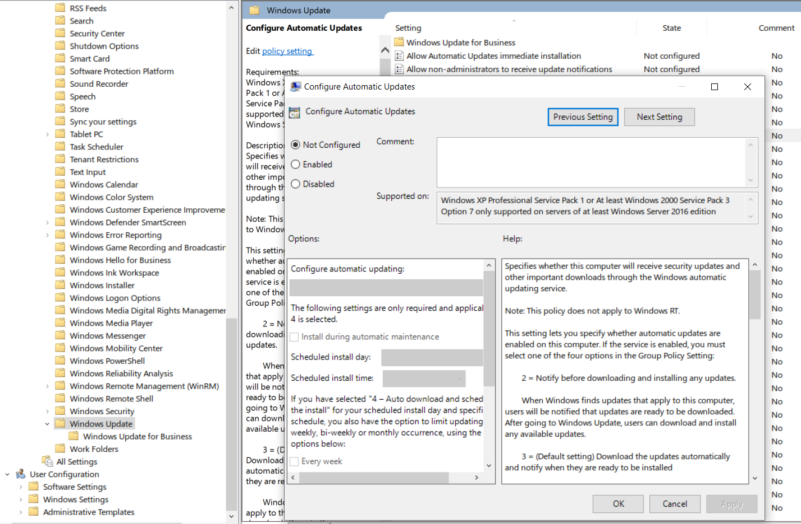
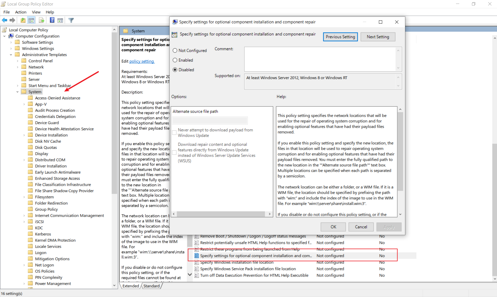
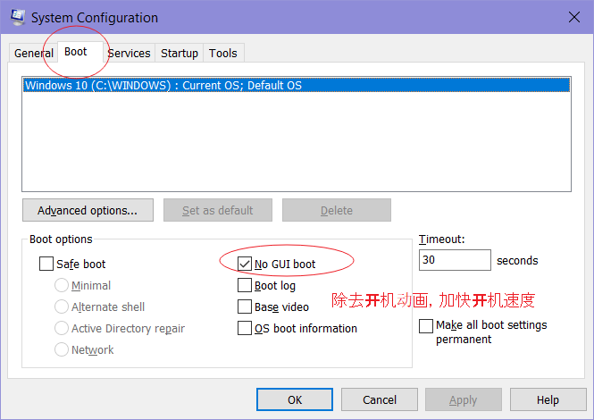
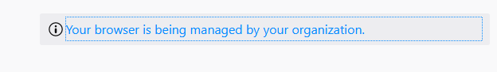
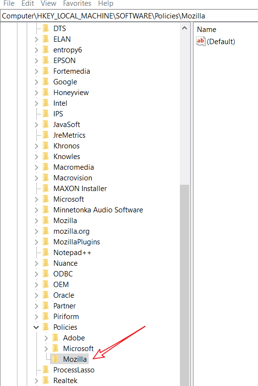

System
提取 windows10 锁屏壁纸
C:/User/Username/AppDate/Local/Packages/Microsoft.Windows.contentDeliveryManager_*/Localstate/Assets
锁屏后息屏时间设置
打开注册表编辑器
HKEY_LOCAL_MACHINE\SYSTEM\CurrentControlSet\Control\Power\PowerSettings\7516b95f-f776-4464-8c53-06167f40cc99\子项
在 7516b95f-f776-4464-8c53-06167f40cc99 子项下，我们继续双击打开8EC4B3A5-6868-48c2-BE75-4F3044BE88A7 子项，然后在其右侧页面中找到 Attributes 一项，双击打开该项目。
在接下来打开的页面中，我们将其键值由 1 改为 2，然后保存设置。
https://jingyan.baidu.com/article/a17d52851297e18099c8f270.html
如何为 Windows 10 UWP 应用设置代理
UWP 是微软在 Windows 10 中引入的新概念，由于所有 UWP 应用均运行在被称为 App Container 的虚拟沙箱环境中，其安全性及纯净度远胜于传统的 EXE 应用。但 App Container 机制同时也阻止了网络流量发送到本机（即 loopback）， 使大部分网络抓包调试工具无法对 UWP 应用进行流量分析。同样的，该机制也阻止了 UWP 应用访问 localhost，即使你在系统设置中启用了代理，也无法令 UWP 应用访问本地代理服务器，十分恼人。
其实 Windows 10 自带了一款名为 CheckNetIsolation.exe 的命令行工具可以帮助我们将 UWP 及 Windows 8 Metro 应用添加到排除列表，具体步骤如下：
通过注册表获取应用的 SID
首先通过 Win + R 快捷键打开「运行」窗口，输入「Regedit」打开注册表编辑器，然后定位到 HKEY_CURRENT_USER\Software\Classes\Local Settings\Software\Microsoft\Windows\CurrentVersion\AppContainer\Mappings，接着在左边的注册表项中找到你想解除网络隔离的应用，右边的 DisplayName 就是应用名称，而左边那一大串字符就是应用的 SID 值了。打开 CMD 面板
在终端中输入 CheckNetIsolation.exe loopbackexempt -a -p=SID，出现「完成」后就大功告成了。
https://zhuanlan.zhihu.com/p/29989157
卸载 Windows10 app
一次卸載所有app
Get-AppxPackage -AllUsers | Remove-AppxPackage一次卸載所有app(僅於當前使用帳戶)
Get-AppxPackage -User | Remove-AppxPackage卸载单独一个app
Get-AppxPackage *Microsoft3DViewer* | Remove-AppxPackagehttps://esisterebbb.blogspot.com/2017/06/windows-10-app.html
Windows Modern APP
- 文件夹的命名规则
a Microsoft Store apps folder has a different naming structure. Typically, it follows the pattern of name, version number, architecture, and Microsoft Store publisher ID.
App 安装的位置
Installation folder – Apps are installed to the WindowsApps folder. You can find it at this location – C:\Program Files.
C:/Program Files/WindowsAppsData folder - Data for all of the Modern Apps are stored in the
AppDatafolder under the user’s profile.Temporary data folder (Isolated storage) – Modern apps save their data at the following location –
C:\Users\<username>\AppData\Local\Packages.https://www.techmesto.com/windows-store-apps-installed-save-data/
离线安装
Powershell 运行如下命令，前提是下载好了离线包
Add-AppxPackage -Path ""
ProgramFiles(x86) & ProgramFiles 区别
- running 64-bit Windows with 32-bit software:
%ProgramFiles(x86)% - running 32-bit Windows, or 64-bit software with 64-bit Windows:
%ProgramFiles%
Windows update 组策略的设置
- 设置更新额外的服务器

Computer Configuration > Policies > Administrative Templates > Windows Components > Windows Updates:
Configure Automatic Updates: Enabled, 2 - Notify for download and notify for installDo not connect to any Windows Update Internet locations: DisabledSpecify intranet Microsoft update service location: Disabled
- 开启官方更新服务器

Computer Configuration > Policies > Administrative Templates >System > Specify settings for optional component installation and component repair
Set it to Enabled
Alternate source file path: Never attempt to download payload from Windows Update: DisabledDownload repair content and optional features directly from Windows Update instead of Windows Server Update Services (WSUS): Enabled
- 清除更新的缓存
net stop wuauserv
cd %Windir%\SoftwareDistribution
del /f /s /q Download 批量更改文件后缀名
ren *.gif *.jpg
将 GIF 更改为 jpg
ren *.* *.gif
将所有文档更改为 GIF
驱动位置
32位:
%systemroot%\system32\driverstore\filerepository
%systemroot% 表示分区中的 Windows 文件夹
在64位 Windows10 中，64位驱动程序存储位置与上面的相同，但是64位 中的 32 位驱动程序则存储在以下位置:%systemroot%\syswow64\driverstore\filerepository
硬件设备驱动程序中的 inf 文件用于控制驱动程序的安装以及向注册表写入硬件设备的配置信息， 该文件还会标记在安装驱动程序时需要用到的相关文件. 在安装硬件设备的驱动程序时， 驱动程序都会有一个.sys 文件， 有些驱动程序还包含 .dll | .dat | .exe 等文件.
%systemroot%\system32\drivers
Windows 備份驅動
PowerShell：dism /online /export-driver /destination:E:\temp
E:\temp 備份的驅動放置的文件夾
恢復時在 設備管理器中 更新驅動，指定备份的目录
或Dism /online /Add-Driver /Driver:D:\DriversBackup /Recurse
软件自启动目录
注：本教程适用于 Win8、Win8.1 和 Win10 系统
首先，“启动”文件夹分为两种，一种是“系统启动文件夹”，Win10系统“启动”文件夹的路径为：X:\ProgramData\Microsoft\Windows\Start Menu\Programs\StartUp
如果想要实现应用程序在所有的用户登录系统后都能自动启动，就把该应用程序的快捷方式放到“系统启动文件夹”里；
另一种为“用户启动文件夹”，如果想要实现某个应用程序只在某个用户登录系统时自动启动，那么就把该应用程序的快捷方式放到这个用户的“启动”文件夹里。Windows10某个用户的“启动”文件夹路径为：X:\Users\用户名\AppData\Roaming\Microsoft\Windows\Start Menu\Programs\Startup
打开“系统启动文件夹”的命令
shell:Common Startup打开“用户启动文件夹”的命令
shell:startup
打开“运行”对话框，输入以上命令，回车或点击“确定”即可打开“用户启动文件夹”
From https://www.windows10.pro/win10-startup-folder/
只打开自己的USB设备
设备管理中找到 usb 设备的ID
之后Win+R组合键后输入 gpedit.msc 进入组策略，依次进入“计算机配置-管理模板-系统-设备安装-设备安装限制”，在右侧打开“允许安装与下列设备ID相匹配的设备”。
双击打开后，点选“已启用”，并点击左下方的“显示”，在弹出对话框中把之前复制的硬件ID贴进去就好了。
From http://www.cfan.com.cn/2018/0511/130790.shtml
清除小娜
http://www.cfan.com.cn/2018/0515/130806.shtml
更快的方法是用 LTSC 吧!
组策略中的管理模板
管理模板 是组策略的重要组成部分，在管理模板中修改的任何策略都会被保存到 Windows 系统的注册表中. [计算机配置]->[管理模板] 节点中的策略设置存在Windows 注册表的 HKEY_LOCAL_MACHINE 根键中，[用户配置]->[管理模板] 节点中的策略设置存在Windows 注册表中的 HKEY_CURRENT_USER 根键中.
管理模板文件基于 XML， 文件扩展名为 admx
除了gpedit之外，可以在 命令提示符中输入 mmc 进入 Microsoft 管理控制台添加
未配置: 策略处于未设置状态， 没有对策略进行任何设置， 对注册表没有进行任何修改. 这是所有策略的默认设置
已启用: 系统会将策略启用时的值写入注册表中.
已禁用: 策略处于禁用状态， 系统会将策略禁用时的值写入注册表中. [未配置]和[已禁用]两个选项通常产生相同的效果.
gpupdate: 刷新组策略
gpupdate /target:comptergpupdate /target:user
可以在控制台中禁用组配置， 而不需要删除
创建删除目录
- 创建 md
如果创建的文件夹有空格， 需要用引号把文件夹名括起来.
如果没有引号，会同时新建多个文件夹
md 可以很方便的创建中级目录:
如: md a\b\c
- 删除 rd
rd /s /q
/s 遇到有子文件或子文件夹的时候可以直接删除.
/q 安静模式， 不会询问你是否删除
快速启动设置命令
| Settings page | Uri |
|---|---|
| Landing page for Settings | ms-settings: |
| About | ms-settings:about |
| Activation | ms-settings:activation |
| Apps & features | ms-settings:appsfeatures |
| Apps for websites | ms-settings:appsforwebsites |
| App volume and device preferences (1903) | ms-settings:apps-volume |
| Software Center (SCCM) | softwarecenter: |
| AutoPlay | ms-settings:autoplay |
| Backup | ms-settings:backup |
| Recovery - Reset/Advanced startup | ms-settings:recovery |
| Battery Saver | ms-settings:batterysaver |
| Battery Saver - settings | ms-settings:batterysaver-settings |
| Battery Saver - usage | ms-settings:batterysaver-usagedetails |
| Bluetooth Devices | ms-settings:bluetooth |
| Shared experiences | ms-settings:crossdevice |
| Default apps | ms-settings:defaultapps |
| For developers | ms-settings:developers |
| Display | ms-settings:display |
| Display Screen rotation | ms-settings:screenrotation |
| Storage | ms-settings:storagesense |
| Offline Maps | ms-settings:maps |
| Connected Devices | ms-settings:connecteddevices |
| Touchpad | ms-settings:devices-touchpad |
| Mouse & Touchpad Devices | ms-settings:mousetouchpad |
| Typing | ms-settings:typing |
| Find My Device | ms-settings:findmydevice |
| USB | ms-settings:usb |
| Airplane mode | ms-settings:network-airplanemode |
| Cellular Network | ms-settings:network-cellular |
| DirectAccess | ms-settings:network-directaccess |
| Dial-up Network | ms-settings:network-dialup |
| Ethernet Network | ms-settings:network-ethernet |
| Proxy (Network) | ms-settings:network-proxy |
| Network Status | ms-settings:network-status |
| VPN | ms-settings:network-vpn |
| Wi-Fi | ms-settings:network-wifi |
| Manage known Wi-Fi | ms-settings:network-wifisettings |
| Sync your settings | ms-settings:sync |
| Data Sense | ms-settings:datausage |
| Mobile Hotspot | ms-settings:network-mobilehotspot |
| Lock screen | ms-settings:lockscreen |
| Power & sleep | ms-settings:powersleep |
| Multitasking | ms-settings:multitasking |
| Optional features | ms-settings:optionalfeatures |
| Personalization | ms-settings:personalization |
| Backgrounds | ms-settings:personalization-background |
| Colors | ms-settings:personalization-colors |
| Colors | ms-settings:colors |
| Start Menu | ms-settings:personalization-start |
| Taskbar | ms-settings:taskbar |
| Themes | ms-settings:themes |
| Printers | ms-settings:printers |
| Proximity | ms-settings:proximity |
| Email & app accounts | ms-settings:emailandaccounts |
| Family & other users | ms-settings:otherusers |
| Your workplace | ms-settings:workplace |
| Date & Time | ms-settings:dateandtime |
| Region & language | ms-settings:regionlanguage |
| Sign-in options | ms-settings:signinoptions |
| Speech | ms-settings:speech |
| Privacy | ms-settings:privacy |
| Account info (privacy) | ms-settings:privacy-accountinfo |
| Background apps (privacy) | ms-settings:privacy-backgroundapps |
| App diagnostics (privacy) | ms-settings:privacy-appdiagnostics |
| Call history (privacy) | ms-settings:privacy-callhistory |
| Calendar (privacy) | ms-settings:privacy-calendar |
| Contacts (privacy) | ms-settings:privacy-contacts |
| Email (privacy) | ms-settings:privacy-email |
| Feedback & diagnostics (privacy) | ms-settings:privacy-feedback |
| Location (privacy) | ms-settings:privacy-location |
| Messaging (privacy) | ms-settings:privacy-messaging |
| Microphone (privacy) | ms-settings:privacy-microphone |
| Motion (privacy) | ms-settings:privacy-motion |
| Notifications and Actions | ms-settings:notifications |
| Notifications (privacy) | ms-settings:privacy-notifications |
| Other (privacy) | ms-settings:privacy-customdevices |
| Radio (privacy) | ms-settings:privacy-radios |
| Speech (privacy) | ms-settings:privacy-speechtyping |
| Tasks (privacy) | ms-settings:privacy-tasks |
| Webcam (privacy) | ms-settings:privacy-webcam |
| Your info (Microsoft account) | ms-settings:yourinfo |
| Closed Captioning | ms-settings:easeofaccess-closedcaptioning |
| High Contrast | ms-settings:easeofaccess-highcontrast |
| Keyboard | ms-settings:easeofaccess-keyboard |
| Magnifier | ms-settings:easeofaccess-magnifier |
| Mouse | ms-settings:easeofaccess-mouse |
| Narrator | ms-settings:easeofaccess-narrator |
| Other options | ms-settings:easeofaccess-otheroptions |
| Projecting to this PC | ms-settings:project |
| Tablet mode | ms-settings:tabletmode |
| Windows Defender | ms-settings:windowsdefender |
| Windows Insider Program (beta’s) | ms-settings:windowsinsider |
| Troubleshoot - Fix Windows Update | ms-settings:troubleshoot |
| Windows Update | ms-settings:windowsupdate |
| WinUpdate - Check for updates | ms-settings:windowsupdate-action |
| WinUpdate - Update history | ms-settings:windowsupdate-history |
| WinUpdate - Advanced options | ms-settings:windowsupdate-options |
| WinUpdate - Restart options | ms-settings:windowsupdate-restartoptions |
关闭开机动画，加快开机

打开回收站
explorer.exe ::{645FF040-5081-101B-9F08-00AA002F954E}
导入和删除计划任务
schtasks /create /ru %runasUsername% /rp %runasPassword% /tn %taskname% /xml %filename%
其中 /ru 是运行这个任务时， 需要以这个账号运行/tn 指定这个任务的名称
这个命令执行之后，会在计划任务的GUI里面显示刚才导入的任务
删除：schtasks /delete /tn taskname
注册表
runonce
同一台机器，不同用户的注册表， 有些地方是不一样的
比如， 你在 administrator 的HKEY_CURRENT_USER/Software/Microsoft/Windows/CurrentVersion/RunOnce
下面添加东西
切换到 bin 这个账号，是看不到刚才在 administrator 添加的东西的
也就是你不能在administrator账号下面添加 runonce 的项， 然后指望切换到 bin 账号让项生效
HKEY_CURRENT_USER 代表当前用户，当前用户登录后才执行的操作。HKEY_LOCAL_MACHINE 代表当前机器，所有操作在用户登录前就执行了。
Run 键值代表着开机启动项，也就是说在这个项下的键值会随着开机启动（这里的开机是指用户登录，也就是说只要有登录操作就会执行，注销然后登录，也会执行这个键值）。
RunOnce 键值类似于 Run 键值，唯一的区别在于，RunOnce 键值只执行一次，操作执行后会被自动删除。
uninstall
32位：HKEY_LOCAL_MACHINE\SOFTWARE\Wow6432Node\Microsoft\Windows\CurrentVersion\Uninstall\
64位：HKEY_LOCAL_MACHINE\SOFTWARE\Microsoft\Windows\CurrentVersion\Uninstal
去除安装软件时的安全提醒
REG ADD "HKCU\Software\Microsoft\Windows\CurrentVersion\Internet Settings\Zones\3" /V "1806" /T "REG_DWORD" /D "00000000" /F
REG ADD "HKLM\Software\Microsoft\Windows\CurrentVersion\Internet Settings\Zones\3" /V "1806" /T "REG_DWORD" /D "00000000" /F
REG ADD "HKLM\SOFTWARE\Policies\Microsoft\Internet Explorer\Security" /V "DisableSecuritySettingsCheck" /T "REG_DWORD" /D "00000001" /F 查看网卡
wmic nic get name, index, NetConnectionStatus
0 = Disconnected
1 = Connecting
2 = Connected 2
3 = Disconnecting
4 = Hardware Not Present
5 = Hardware Disabled
6 = Hardware Malfunction
7 = Media Disconnected
8 = Authenticating
9 = Authentication Succeeded
10 = Authentication Failed
11 = Invalid Address
12 = Credentials Required
wmic path win32_networkadapter where index=1 call disable查看 Chrome 版本
reg query "HKLM\SOFTWARE\Wow6432Node\Microsoft\Windows\CurrentVersion\Uninstall\Google Chrome"
wmic datafile where name="C:\\Program Files (x86)\\Google\\Chrome\\Application\\chrome.exe" get Version /valuewmic 远程执行命令
wmic /USER:"sss\user1" /PASSWORD:"ss-12" /NODE:111.111.111.111 process call create "D:\r.bat"查询电源计划任务的情况：
UID 从顶层开始指定，不然会报错
powercfg /q db310065-829b-4671-9647-2261c00e86ef 238c9fa8-0aad-41ed-83f4-97be242c8f20 7bc4a2f9-d8fc-4469-b07b-33eb785aaca0
查看 Windows 版本
可以查看 OS Build:ver
或者：winver
更改 DNS
查看网卡状态：
netsh interface show interface添加主 DNS：
netsh interface ipv4 set dnsservers "Ethernet" static 8.8.8.8 primary添加辅助 DNS
netsh interface ipv4 add dnsservers "Ethernet" 1.1.1.1 index=2设置动态 DNS
netsh interface ip set dns name="本地连接" source=dhcp
锁屏命令
% windir %\System32\rundll32.exe user32.dll,LockWorkStation
移除路由表
route delete 0.0.0.0 mask 0.0.0.0 172.31.96.1 -p
Softwares
NotePad++ 缓存文件的位置
C:\Users\Administrator\AppData\Roaming\Notepad++\session.xml
C:\Users\Administrator\AppData\Roaming\Notepad++\backup
里面的文件就是你的自动保存的缓存文件。
From https://blog.csdn.net/u010216716/article/details/49814283
静默安装
大部分软件，其安装都具备一定的智能性，换句话说，许多软件的安装都能采取全自动或半自动的方式进行。
一、 Microsoft Windows Installer
如果某个软件是用 Windows Installer 打包的，那你就应该能在文件夹中看到 *.msi 文件。
这是最典型的特征，这些文件通常可以使用 /QB 和 /QN 参数进行自动安装
/qb 会在窗口中显示一个基本的安装进程
/qn 参数则不会显示任何窗口，直接在后台自动安装
为了阻止某些程序安装成功后自动重启动（例如Kerio Personal Firewall 4），你可以在 /qn 或者 /qb参数后使用REBOOT=Suppress标记，例如：
如安装虚拟光驱 DaemonTools：msiexec /i dtools.msi /qb REBOOT=SUPPRESS
二、 Windows 补丁包
有两种情况，一种是类似IE增量补丁包的那种安装文件，要使之静默安装，只需要在执行文件后加上 /q:a /r:n 参数即可；一种是 Windows 常用的补丁文件，一般情况下加上 /U /N /Z 即可实现静默安装。
(对于新的系统补丁，也可使用 /passive /norestart)。这通用大部分情况，但某些特定的补丁不能用此法进行静默安装。
三、InstallShield
a.要使用静默安装的方式安装用InstallShield技术打包的程序，首先要在现有的操作系统中创建一个setup.iss文件。
在命令行窗口中使用 -R 参数（大小写敏感）运行安装程序。
例如：Setup.exe -R
b. 接着会显示常见的安装屏幕，并且询问你一些问题，例如要安装的目录等有一点是很重要的，在安装结束后你不能选择“立刻重启动计算机”的选项。如果你选了，在批处理文件中的其他命令就会因为计算机重启动而无法执行。
c. 在安装程序运行完毕后，打开你的C:/Windows（或者C:/WINNT）目录，然后找到setup.iss文件，把这个文件和你将要静默安装的程序setup.exe保存在同一个目录中
d. 用以下命令进行静默安装：setup.exe -s [-sms]
我怎么知道哪个程序是使用InstallShield技术打包的？
大部分这类程序的安装文件都可以被压缩软件解压缩，安装文件setup.exe的属性对话框中应该有“InstallShield (R) Setup Launcher”或者其他类似的字样。
最后，如果你在保存安装文件的文件夹中看到了一个setup.iss文件，那么毫无疑问这是用InstallShield打包了！
四、InstallShield with MSI
InstallShield with MSI 制作的安装文件，请使用类似：setup.exe /s /v”/qb” 来安装
五、WISE Installer
用WISE技术打包的软件在安装的时候可以选择使用 /s参数进行自动安装：setup.exe /s
六、Inno Setup
Inno Setup 制作的安装文件，请使用：setup.exe /sp- /silent /norestart
我怎么知道哪个安装程序是用Inno 技术打包的？
这种软件安装时第一个界面一般如下图所示
在窗口标题栏左侧的图标上点击鼠标左键，然后再探出菜单上点击“About Setup”可以看见安装类型
七、NullSoft Installation System
使用 NSIS (NullSoft Installation System) 制作的安装文件，可用 /S （注意大写）来进行静默安装。示例：setup.exe /S
使用NSIS 打包的安装文件可以用 /S参数进行自动安装（“S”是大小写敏感的）：
Setup.exe /S
你也可以用 /D参数选择将要安装的目标分区和文件夹：
Setup.exe /S /D=E:/Software/CDex
像Winamp 和CDex这类的软件都会在安装结束后显示一个确认屏幕（CDex）或者一个设置文件关联方式的结束安装屏幕（Winamp）
我怎么知道哪个程序是使用NSIS技术打包的？
很多用NSIS打包的程序在安装的时候都有类似这样的窗口，例如Winamp 和CDex
八、Wise Installation Professional
制作的安装文件，可用 /silent 参数进行静默安装。
反正拿到一个安装程序，大家用各静默安装参数试试就知道了
（[/s] [/S] [/silent [/noreboot]] [/verysilent [/sp-] [/norestart]] [/q] [/qn] [/qb] [REBOOT=SUPPRESS] [/s /v/qn] [/q:a /r:n] [/u /n /z] [/quiet] [/SilentInstallNoSponsor] [/SilentInstall] [/s /qn] [/s /qd] [-s] [-q] 等）
常用软件的静默安装参数参考
winrar 静默参数 /s (大小写皆可)
Windows Installer 3 (.msi)
msiexec /i x:/y/z.msi /qb(或qn) /norestart
获取安装参数：msiexec /help
inno 的包 /verysilent 代替 /silent 也可
From https://blog.csdn.net/lihongzhai/article/details/5048748
火狐软件问题

设置出现这样的提示
到注册表里面删除

把mozilla 目录下的 firefox 目录删除